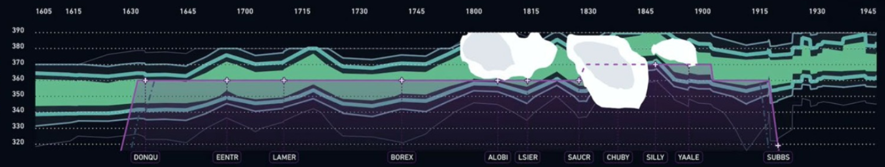

{% extends 'layouts/base.html' %}

{% block title %} Map Box {% endblock title %}

{% block content %}
    <!-- Header -->
    <div class="header bg-primary pb-2"></div>
    <div class="container-fluid mt--2" style="padding: 0 !important;">
        <div class="row">
            <div class="col">
                <div class="card nexus_map">
                    <style>
                        body {
                            margin: 0;
                            padding: 0;
                        }
                        #map {
                            position: absolute;
                            top: 0;
                            bottom: 0;
                            width: 100%;
                            height: 100%;
                        }
                    </style>
                    <div id="map"></div>

                    <div class="map-overlay top">
                        <div class="map-overlay-inner">
                            <h2>Polygons</h2>
                            <label>Time:</label>
                            <input type="text" id="time-slider">
                            <br>
                            <label>Level Range:</label>
                            <input type="text" id="level-range">
                            <br>
                            <label id="min-level"></label>
                            <label id="max-level"></label>
                        </div>
                    </div>
                    
                                                                 
                    
                    
                </div>
                <div class="card nexus_vertical_profile bottom-image">
                    <!--  -->
                    <div id="plotly-graph"></div>
                </div>                
            </div>
        </div>
    </div>


{% endblock content %}

<!-- Specific JS goes HERE --> 
{% block javascripts %}

<link rel="stylesheet" href="https://cdnjs.cloudflare.com/ajax/libs/ion-rangeslider/2.3.1/css/ion.rangeSlider.min.css">
<script src="https://cdnjs.cloudflare.com/ajax/libs/ion-rangeslider/2.3.1/js/ion.rangeSlider.min.js"></script>


<link href="https://api.mapbox.com/mapbox-gl-js/v3.2.0/mapbox-gl.css" rel="stylesheet">
<script src="https://api.mapbox.com/mapbox-gl-js/v3.2.0/mapbox-gl.js"></script>

<script>
	mapboxgl.accessToken = 'pk.eyJ1IjoibnVydXphZGVvbWFyIiwiYSI6ImNsaTFza3I5MjBmYnQzamxwb3plNm5vMTEifQ.3NIwyHw0aK7tp40AbTKOFg';
    const map = new mapboxgl.Map({
        container: 'map',
        // You can add layers to the predetermined slots within the Standard style basemap.
        style: 'mapbox://styles/mapbox/light-v11' ,
        center: [5, 40.7127281],
        zoom: 3,
        maxZoom: 6,
        attributionControl: false
    });

    map.on('load', function () {
    var geojsonURL = 'https://raw.githubusercontent.com/NuruzadeOmar/test-geojson/main/r_json_0.geojson'; // Default GeoJSON URL

    // Function to load GeoJSON data
    function loadGeoJSON(time, minLevel, maxLevel) {
        geojsonURL = 'https://raw.githubusercontent.com/NuruzadeOmar/test-geojson/main/r_json_' + time + '.geojson';
        map.addSource('geojson-data', {
            type: 'geojson',
            data: geojsonURL
        });

        map.addLayer({
            'id': 'geojson-layer',
            'type': 'fill',
            'source': 'geojson-data',
            'paint': {
                'fill-color': [
                    'interpolate',
                    ['linear'],
                    ['get', 'level'],
                    230, '#f7fafa',
                    240, '#e0ecf4',
                    250, '#bfd3e6',
                    260, '#9ebcda',
                    270, '#8c96c6',
                    280, '#8c6bb1',
                    290, '#88419d',
                    300, '#810f7c',
                    310, '#4d004b'
                ],
                'fill-opacity': 0.8
            }
        });

        // Update level range filter
        updateLevelRange(minLevel, maxLevel);
    }

    // Function to remove GeoJSON data
    function removeGeoJSON() {
        map.removeLayer('geojson-layer');
        map.removeSource('geojson-data');
    }

    // Function to update level range filter
    function updateLevelRange(minLevel, maxLevel) {
        map.setFilter('geojson-layer', ['all', ['>=', ['get', 'level'], minLevel], ['<=', ['get', 'level'], maxLevel]]);
        // Update the labels to show the selected levels
        document.getElementById('min-level').innerText = 'Min Level: ' + minLevel;
        document.getElementById('max-level').innerText = 'Max Level: ' + maxLevel;
    }

    // Initialize time slider
    var timeSlider = $("#time-slider");

    timeSlider.ionRangeSlider({
        type: "single",
        min: 0,
        max: 23,
        from: 0,
        step: 1,
        grid: true,
        grid_num: 24,
        onFinish: function (data) {
            var time = data.from;
            removeGeoJSON();
            loadGeoJSON(time, levelSlider.data("ionRangeSlider").result.from, levelSlider.data("ionRangeSlider").result.to);
        }
    });

    // Initialize level range slider
    var levelSlider = $("#level-range");

    levelSlider.ionRangeSlider({
        type: "double",
        min: 230,
        max: 400,
        from: 230,
        to: 400,
        step: 10,
        grid: true,
        grid_num: 10,
        onFinish: function (data) {
            var minLevel = data.from;
            var maxLevel = data.to;
            updateLevelRange(minLevel, maxLevel);
        }
    });

    // Load initial GeoJSON data
    loadGeoJSON(0, 230, 400); // Load data for 00:00 and default level range
});


    
    map.addControl(new mapboxgl.NavigationControl());
</script>
<script src="https://cdn.plot.ly/plotly-latest.min.js"></script>


<script>
    // Your Plotly graph creation logic
    var data = [{
        x: [15, 16, 17, 18, 19, 20],
        y: [330, 370, 370, 360, 360, 330],
        text: ["ARF", "JSF", "ZDF", "SWF", "ARZ", "OMR"],
        type: 'scatter',
        mode: 'markers+lines',
        marker: {
            symbol: 'cross', // Change marker symbol to cross
            color: 'rgb(240, 240, 240)', // Dark white color for the marker
            size: 10, // Set marker size
            line: {
                width: 1,
                color: 'rgb(128, 0, 128)' // Marker border color (light purple)
            }
        },
        line: {
            color: 'rgb(128, 0, 128)', // Trendline color (light purple)
        },
        // Add names to each point
        text: ["ARF", "JSF", "ZDF", "SWF", "ARZ", "OMR"],
        // Set text position to bottom center
        textposition: 'bottom center',
        // Customize tooltip format
        hoverinfo: 'x+y+text',
        showlegend: false // Remove legend
    }];

    // Set up categorical axis annotations
    var annotations = [];
    var xValues = [15, 16, 17, 18, 19, 20];
    var textValues = ["ARF", "JSF", "ZDF", "SWF", "ARZ", "OMR"];
    for (var i = 0; i < xValues.length; i++) {
        var result = {
            x: xValues[i],
            y: 320, // Adjust this value to position the annotation
            xref: 'x',
            yref: 'y',
            text: textValues[i],
            showarrow: false,
            font: {
                color: '#ffffff', // Text color
                size: 14 // Text size
            }
        };
        annotations.push(result);
    }

    // Set up line segments from markers to bottom
    var lines = [];
    for (var i = 0; i < xValues.length; i++) {
        var line = {
            x: [xValues[i], xValues[i]], // x-values are the same as marker x-values
            y: [data[0].y[i], 320], // y-values are from marker y-values to the bottom (adjust the bottom value as needed)
            mode: 'lines',
            line: {
                width: 1,
                color: 'rgb(128, 0, 128)', // Line color (light purple)
                dash: 'dot' // Set line style to dashed
            },
        };
        lines.push(line);
    }

    var layout = {
        xaxis: {
            side: "top",
            showgrid: false, // Disable vertical grid lines
            // Set tickvals to customize the position of the names
            tickvals: [15, 16, 17, 18, 19, 20],
            // Set ticktext to display the names
            // ticktext: ["ARF", "JSF", "ZDF", "SWF", "ARZ"]
        },
        yaxis: {
            title: 'Y Axis',
            showgrid: true, // Enable horizontal grid lines
            dtick: 10 
        },
        // Set the plot background color to a dark theme
        paper_bgcolor: '#1e1e1e',
        plot_bgcolor: '#1e1e1e',
        // Set text color to light
        font: {
            color: '#ffffff'
        },
        // Set grid color to a lighter shade
        yaxis: {
            gridcolor: '#ffffff4d',
            title: {
                font: {
                    color: '#ffffff'
                }
            },
            dtick: 10,
        },
        // Add annotations to the layout
        annotations: annotations,
        showlegend: false

    };

    Plotly.newPlot('plotly-graph', data.concat(lines), layout);
</script>


{% endblock javascripts %}
